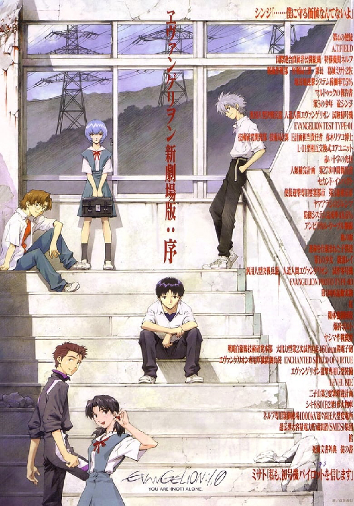
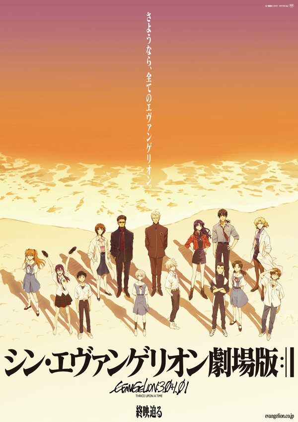
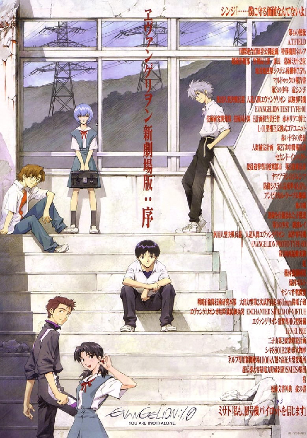
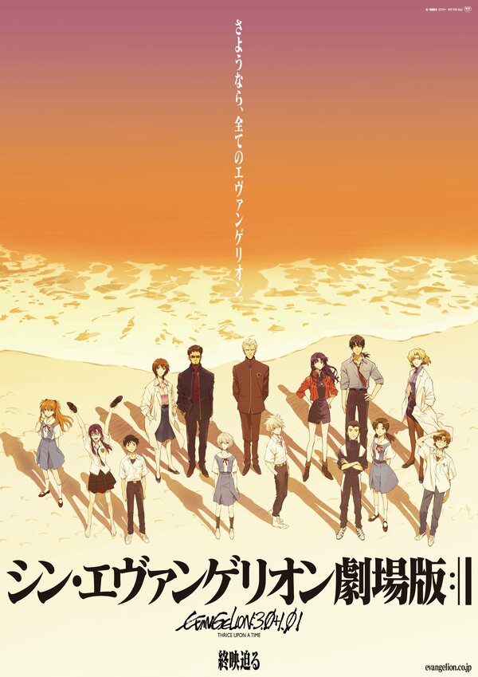

Евангелион (сериал 1995 – 1996)
Оригинальное название "Shin Seiki Evangelion"

О Сериале
- Год выпуска1995 (1 сезон)
- СтранаЯпония
- Жанраниме, мультфильм, фантастика, боевик, драма
- Слоган«Вы готовы к войне с ангелами?»
- РежиссерХидэаки Анно
- СценарийХидэаки Анно, Ёдзи Энокидо, Акио Сацукава, ...
- Цифровой релиз21 июня 2019, «Netflix»
Сиквелы
 



Обзор
2015 год, Токио-3. 15 лет назад произошёл Второй удар, в результате чего Антарктида растаяла, Землю накрыла глобальная катастрофа, и большая часть человечества погибла. Теперь планету атакуют Ангелы — загадочные существа, противостоять которым могут только созданные с помощью биотехнологий гигантские роботы серии «Евангелион».
14-летний Синдзи Икари направлялся на встречу с отцом, руководителем влиятельной организации NERV, когда Токио-3 подвергся нападению Ангела. С помощью капитана Мисато Кацураги парень добирается до подземной штаб-квартиры NERV и единственное, что он хочет сказать отцу — как сильно его ненавидит. Но на месте выясняется, что Синдзи должен прямо сейчас залезть в робота и сражаться с Ангелом.
Рейтинг
8.11Кинопоиск
8.50IMBd